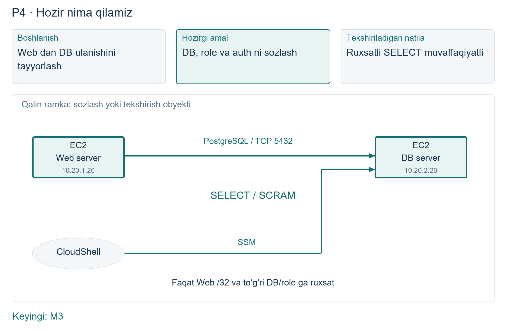

P4 PostgreSQL ga autentifikatsiya bilan ulanish
Mashqlar P0–P6 · Topshiriqlar M0–M6
Mos topshiriq: M4.
Nimani o‘rganamiz
Database, role va schema ni farqlash; Web dan belgilangan parol bilan SQL bajarish.
Topshiriq
jdu_catalog_practice, catalog_practice_setup va catalog_practice_app ni yarating. Faqat Web 10.20.1.20/32 dan SCRAM ulanishiga ruxsat bering. P4 da app jadvallari hali kerak emas.
Topshiriq diagrammasi

Qalin ramka asosiy obyektni bildiradi. Har qadamdagi terminalda sozlang; strelkalar ulanish yoki tekshirish yo‘nalishidir. SG ruxsatlari boshlang‘ich tarqatmada tayyor; bu topshiriqda server ichini sozlaysiz. CloudShell dan DB serverga SSM orqali ulanib, sozlang.
- Profile: practice
- Database: jdu_catalog_practice
- Setup role: catalog_practice_setup
- Runtime role: catalog_practice_app
Bu qanday ishlaydi
Boshlashdan oldingi holat:
DB da o‘quv resurslari bor; Web → DB ruxsatli yo‘li ishlatiladi.
Practice4 da bajariladigan ishlar
Mashq DB va setup/runtime role yaratiladi; Web dan parol bilan SQL bajariladi.
Tarmoq yo‘li, DB listen, HBA ruxsati, parol va SQL privilege alohida kerak. ssm-user - OS user, catalog_practice_app - DB role. HBA birinchi mos qatorni ishlatadi. Ulanish huquqi table yaratish huquqini anglatmaydi. HBA va SQL privilege.
Yechim namunasi (bajarish tartibi)
P4.1 PostgreSQL o‘rnatish va o‘quv SQL ni ochish
Bajarish muhiti:
DB serverning SSM terminali: ssm-user
Maqsad va amallar:
DB ga SSM bilan kirib role=db ni tekshiring. PostgreSQL 16 cluster - DB serverni boshqarish birligi. Yordamchi app ni tekshirib SQL ni ochadi; DB yoki role yaratmaydi.
Buyruqlar: raqamlar shu qadam ichidagi tartib
# 1. Ichki repo package ro‘yxatini yangilash; yuklash xatosini xato deb olish.
sudo apt-get update -o APT::Update::Error-Mode=any
# 2. Ichki repo dan postgresql-16 postgresql-client-16 ni tavsiya etilgan qo‘shimchalarsiz o‘rnatish.
sudo apt-get install --no-install-recommends postgresql-16 postgresql-client-16
# 3. Belgilangan hash ni tekshirib o‘qituvchi app/SQL resurslarini ochish.
sudo python3 -B /var/lib/jdu-web/lesson-resources-r1/offline_assets.py
# 4. PostgreSQL version, cluster, port va holatini o‘qish.
pg_lsclusters
# 5. Postgres sifatida DB sozlamasini o‘qish: SHOW data_directory;
sudo -u postgres psql -X -d postgres -c "SHOW data_directory;"
Buyruq va sozlamalar ma’nosi:
Package o‘rnatish va DB ichida o‘quv obyektlarini yaratish alohida bosqich. Pg_lsclusters version, cluster, port va holatni ko‘rsatadi. Sudo -u postgres command ni OS postgres bilan bajaradi; -X shaxsiy psql config ni o‘qimaydi.
Kutilgan natija va ma’nosi:
16/main, data directory /var/lib/postgresql/16/main. O‘quv SQL /var/lib/jdu-web/lesson-resources-r1/app/sql da.
Ishlamasa:
Mavjud DB yoki role ni o‘chirmang. Oldin qurilgan bo‘lsa, holatni o‘qib faqat yetishmagan qadamlarni bajaring.
P4.2 DB tinglashi va SCRAM ni sozlash
Bajarish muhiti:
DB serverning SSM terminali: ssm-user
Maqsad va amallar:
postgresql.conf nusxasini sudo cp -an bilan saqlang. sudo nano /etc/postgresql/16/main/postgresql.conf da uch qiymatni sozlang. Parametr takrorlansa, amaldagi qiymatni SHOW bilan tekshiring. Faqat DB private IP va 5432 tinglanadi; password_encryption keyingi parollar saqlanish turini belgilaydi.
Sozlama yoki ma’lumot: terminal buyrug‘i emas
listen_addresses = '10.20.2.20'
port = 5432
password_encryption = 'scram-sha-256'
Buyruq va sozlamalar ma’nosi:
Listen_addresses DB tinglaydigan o‘z IP sini bildiradi, client ruxsat ro‘yxatini emas. Password_encryption yangi o‘rnatiladigan parol formatini belgilaydi. Faylni saqlash listener yoki eski parollar o‘zgarganini isbotlamaydi.
Kutilgan natija va ma’nosi:
Barcha manzil uchun * ishlatmang. Parollar HBA va restart dan keyin belgilanadi.
Ishlamasa:
Bu SQL emas, postgresql.conf mazmuni. SG va OS tinglash manzili alohida nazoratdir.
P4.3 HBA da manba, database va role ni cheklash
Bajarish muhiti:
DB serverning SSM terminali: ssm-user
Maqsad va amallar:
pg_hba.conf nusxasini saqlab, sudo nano /etc/postgresql/16/main/pg_hba.conf ga quyidagi qoidalarni yozing. Birinchi mos qator ishlatiladi, shu sabab eski keng ruxsatlarni qoldirmang. OS postgres Unix socket/peer orqali boshqaradi. M4 rollari alohida ko‘rsatilgan; mashq roli asosiy DB ga kira olmaydi.
Sozlama yoki ma’lumot: terminal buyrug‘i emas
local all postgres peer
local all all reject
host jdu_catalog_practice catalog_practice_setup 10.20.1.20/32 scram-sha-256
host jdu_catalog_practice catalog_practice_app 10.20.1.20/32 scram-sha-256
host jdu_catalog catalog_setup 10.20.1.20/32 scram-sha-256
host jdu_catalog catalog_app 10.20.1.20/32 scram-sha-256
host all all 0.0.0.0/0 reject
host all all ::/0 reject
Buyruq va sozlamalar ma’nosi:
Host qatori DB, role, client address va authentication usuli birikmasidir. 10.20.1.20/32 faqat Web ni bildiradi. Kerakli ruxsatlar oxirgi reject dan oldin turadi. OS postgres uchun local peer TCP parolli kirishdan alohida.
Kutilgan natija va ma’nosi:
Ruxsat database/role/manba birikmasiga bog‘liq. 0.0.0.0/0 qatori reject, ya’ni rad etishdir.
Ishlamasa:
Autentifikatsiyani trust bilan chetlab o‘tmang. Asosiy SG ham DB 5432 ni faqat Web dan ruxsat qiladi.
P4.4 Qayta ishga tushirish va amaldagi qiymatni tekshirish
Bajarish muhiti:
DB serverning SSM terminali: ssm-user
Maqsad va amallar:
restart sozlamani qayta o‘qiydi. SHOW va pg_hba_file_rules fayl matnini emas, ishlayotgan qiymatni tekshiradi. psql -X shaxsiy boshlang‘ich fayllarni o‘qimaydi.
Buyruqlar: raqamlar shu qadam ichidagi tartib
# 1. postgresql@16-main ni yangi sozlama bilan qayta ishga tushirish.
sudo systemctl restart postgresql@16-main
# 2. postgresql@16-main joriy ish holatini o‘qish.
systemctl is-active postgresql@16-main
# 3. TCP listen IP, port va jarayonlarini ko‘rsatish.
sudo ss -lntp
# 4. Postgres sifatida DB sozlamasini o‘qish: SHOW password_encryption;
sudo -u postgres psql -X -d postgres -c "SHOW password_encryption;"
# 5. HBA xato qatorlarini topish; to‘g‘ri bo‘lsa 0 qator.
sudo -u postgres psql -X -d postgres -c \
"SELECT line_number,error FROM pg_hba_file_rules WHERE error IS NOT NULL;"
Buyruq va sozlamalar ma’nosi:
Postgresql@16-main kerakli cluster service idir. Restart dan keyin service, listener va SHOW amaldagi qiymatini birga tekshiring. Pg_hba_file_rules da error yo‘qligi haqiqiy client ulanishini almashtirmaydi.
Kutilgan natija va ma’nosi:
active, 10.20.2.20:5432, scram-sha-256, HBA xatosi - 0 qator.
Ishlamasa:
postgresql.service active(exited) bo‘lishi cluster ishlashini isbotlamaydi. journalctl -u postgresql@16-main ni o‘qing.
P4.5 Mashq DB va ikkita role yaratish
Bajarish muhiti:
DB serverning SSM terminali: ssm-user
Maqsad va amallar:
profile_sql.py faqat mashq nomlari bilan tayyor SQL ni chiqaradi. Avval matnni o‘qing, keyin ayni chiqishni psql ga uzating. setup DB/schema egasi va boshlang‘ich jadval yaratuvchi; app odatiy ulanish roli. App dasturlash talab qilinmagani uchun berilgan SQL dan foydalaning.
Buyruqlar: raqamlar shu qadam ichidagi tartib
# 1. Ish katalogini /var/lib/jdu-web/lesson-resources-r1/app ga o‘zgartirish.
cd /var/lib/jdu-web/lesson-resources-r1/app
# 2. Mashq DB role yaratish SQL i ni ko‘rsatish; hali qo‘llamaslik.
python3 -B profile_sql.py --profile practice 01_create_roles.sql
# 3. Mashq DB role yaratish SQL i ni yaratib postgres orqali kerakli DB ga qo‘llash.
python3 -B profile_sql.py --profile practice 01_create_roles.sql | sudo -u postgres \
psql -X -v ON_ERROR_STOP=1 -d postgres
# 4. Mashq DB va schema yaratish SQL i ni yaratib postgres orqali kerakli DB ga qo‘llash.
python3 -B profile_sql.py --profile practice 02_prepare_schema.sql | sudo -u postgres \
psql -X -v ON_ERROR_STOP=1 -d jdu_catalog_practice
Buyruq va sozlamalar ma’nosi:
Profile_sql.py ning birinchi ishga tushishi faqat SQL ni ko‘rsatadi. | orqali psql ga uzatilganda DB o‘zgaradi. --profile practice mashq nomlarini tanlaydi; ON_ERROR_STOP=1 SQL xatosida to‘xtatadi. Mavjud DB da yaratishni takrorlamang.
Kutilgan natija va ma’nosi:
Ikki CREATE ROLE, CREATE DATABASE va schema/CONNECT/USAGE sozlanadi. app ga superuser/CREATEDB berilmaydi.
Ishlamasa:
already exists oldin bajarilganini anglatishi mumkin. DROP qilmang; \du va \l orqali solishtiring. Pipe o‘ngidagi psql SQL error bermaganini tekshiring.
P4.6 Ikki DB parolini yashirin kiritish
Bajarish muhiti:
DB serverda OS postgres nomidan psql
Maqsad va amallar:
Birinchi qator DB shell ida bajarilib postgres=# psql ni ochadi. \password buyruqlarini psql ichida kiriting. setup/app uchun kamida 16 belgili turli parollarni har birini ikki marta yashirin kiriting. Qiymatni buyruq yoki hisobotga yozmang. \q DB shell iga qaytaradi.
Buyruqlar: raqamlar shu qadam ichidagi tartib
# 1. DB OS terminalida postgres sifatida psql ochish; keyingi amallar psql ichida.
sudo -u postgres psql -X -d postgres
Bundan keyin psql ichida kiriting
-- 2. Psql ichida catalog_practice_setup parolini yashirin kiritish.
\password catalog_practice_setup
-- 3. Psql ichida catalog_practice_app parolini yashirin kiritish.
\password catalog_practice_app
-- 4. Psql ichida mashq DB role atribut va huquqlarini tekshirish.
\du catalog_practice_*
-- 5. Psql dan chiqib ayni DB server OS terminaliga qaytish.
\q
Buyruq va sozlamalar ma’nosi:
Sudo qatorini OS terminalida, keyingi \password, \du va \q ni psql ichida bittadan kiriting. Setup va app boshqa DB role bo‘lib, parollarini farqlang. Parol kiritishda belgilar ko‘rinmasligi normal.
Kutilgan natija va ma’nosi:
Superuser/Create role/Create DB yo‘q. Bular RDP paroli, app admin paroli yoki baholash tokenidan alohida maxfiy qiymatlardir.
Ishlamasa:
Klaviatura tartibiga e’tibor bering. Tekshirish uchun parolni chat yoki editorga yozmang. Unutilsa o‘qituvchi bilan shaxsiy tiklash tartibini bajaring.
P4.7 Web dan parol bilan SELECT bajarish
Bajarish muhiti:
Web serverning SSM terminali: ssm-user
Maqsad va amallar:
DB SSM dan exit qilib CloudShell ga qayting, Web SSM ni oching. psql da -h manzil, -U role, -d DB nomi, -W parol so‘rovi. Avval ichki IP orqali ulaning, keyin P2 da ro‘yxatga olingan mashq DB nomi orqali shu SELECT ni bajaring. DB nomi, rol va natijani solishtiring.
Buyruqlar: raqamlar shu qadam ichidagi tartib
# 1. Ichki repo dan postgresql-client-16 ni tavsiya etilgan qo‘shimchalarsiz o‘rnatish.
sudo apt-get install --no-install-recommends postgresql-client-16
# 2. Web dan kerakli DB ga mavjud parol bilan ulanib SELECT natijasini o‘qish.
psql -X -h 10.20.2.20 -U catalog_practice_app -d jdu_catalog_practice -W -c \
'SELECT current_database(),current_user,1 AS value;'
# 3. Odatiy resolver orqali practice-db.lab.test IPv4 sini olish.
getent ahostsv4 practice-db.lab.test
# 4. Web dan kerakli DB ga mavjud parol bilan ulanib SELECT natijasini o‘qish.
psql -X -h practice-db.lab.test -U catalog_practice_app -d jdu_catalog_practice -W -c \
'SELECT current_database(),current_user,1 AS value;'
Buyruq va sozlamalar ma’nosi:
Psql da -h serverni, -U DB role ni, -d DB nomini, -W parol so‘rashni, -c SQL ni belgilaydi. Web da bajaring. Natijadagi DB va user nomlari mashq profile ga ulanganini tasdiqlaydi. Nom bilan ulanganda IP tizim DNS idan olinadi.
Kutilgan natija va ma’nosi:
jdu_catalog_practice / catalog_practice_app / 1. Port ochiqligi yoki pg_isready muvaffaqiyati bu autentifikatsiyali SQL o‘rnini bosmaydi.
Ishlamasa:
IP orqali ulanish ishlasa, nom orqali esa ishlamasa, P2 dagi tizim DNS i va mashq DB nomini tekshiring. Autentifikatsiya rad etilsa, manba, DB, rol va parolni tekshiring. Sinash uchun DB ni Internet ga ochmang.
P4.8 Checker uchun mavjud parolni faqat Web da saqlash
Bajarish muhiti:
Web serverning SSM terminali: ssm-user
Maqsad va amallar:
Yordamchi mavjud catalog_practice_app parolini ikki marta yashirin so‘rab, Web dagi root-only 0600 faylga saqlaydi. DB parolini o‘zgartirmaydi. Env ni cat bilan ko‘rsatmang va source qilmang. Exit dan keyin PC dagi Web Portal da P4 ni tekshiring.
Buyruqlar: raqamlar shu qadam ichidagi tartib
# 1. Mavjud mashq DB parolini yashirin kiritib, faqat Web da saqlash.
sudo python3 -B /var/lib/jdu-web/lesson-resources-r1/database_secret.py --profile \
practice
# 2. Joriy server session ini yopib CloudShell ga qaytish.
exit
Buyruq va sozlamalar ma’nosi:
Database_secret.py mavjud runtime parolini qayta olib Web dagi himoyalangan config ga saqlaydi. Bu yangi parol yaratish yoki almashtirish emas. Setup yoki RDP emas, catalog_practice_app ning mavjud parolini ishlating.
Kutilgan natija va ma’nosi:
D11_EXISTING_DB_PASSWORD_STORED_LOCALLY va to‘qqizta mashq tekshiruvi. Noto‘g‘ri parol hamda taqiqlangan DB/admin-role rad etilishi muvaffaqiyatli ulanish bilan solishtiriladi.
Ishlamasa:
Fayl mavjud bo‘lsa qayta yaratmang. P5 da ayni DB paroli app sozlamasiga kiritiladi. M4 alohida mission DB/rollaridan foydalanadi.
Natijani o‘qish namunasi (kiritmang)
current_database | current_user | value
jdu_catalog_practice | catalog_practice_app | 1
SELECT natijasini o‘qish namunasi; ustun kengligi boshqacha bo‘lishi mumkin. DB, role va value=1 ni tekshiring. Bu table o‘zgartirish huquqini isbotlamaydi.
Tushunishni tekshirish (ballsiz)
Parol qabul qilinib CREATE TABLE rad etildi. Parol albatta xatomi?
Izoh:
Authentication va SQL privilege boshqa-boshqa. Runtime uchun setup amalining rad etilishi to‘g‘ri holat bo‘lishi mumkin.